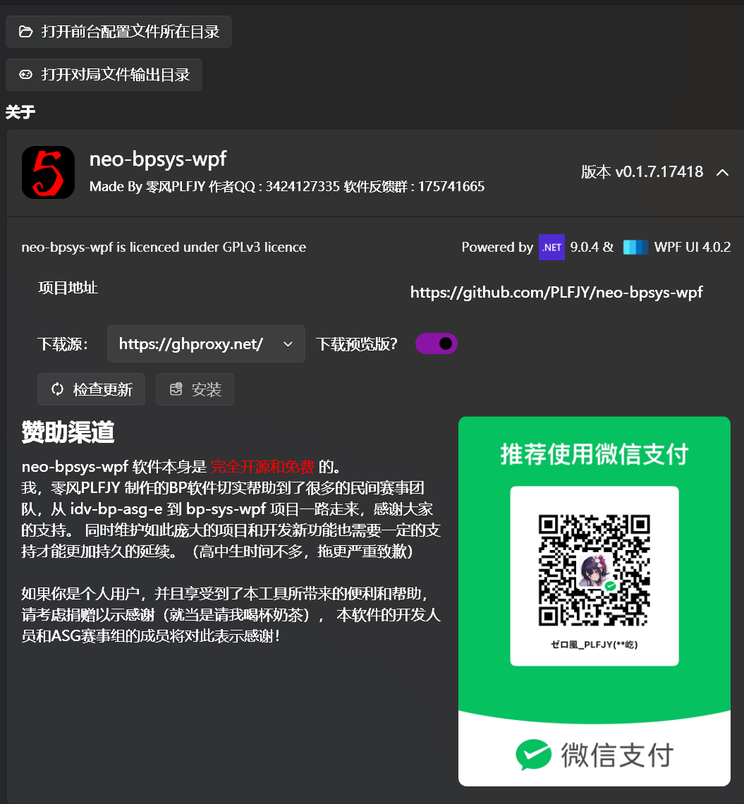

本页面的功能是显示本软件的各类信息，如作者信息、联系方式、版本号、开源协议、赞助方式等，以及软件的更新信息。

【打开前台配置文件所在目录】的作用是便于用户手动修改前台布局。
【打开对局文件输出目录】的作用是使用户查看保存的对局信息更方便。
软件的更新目前支持3个国内可用的下载源，第四个空的下载源是从源站 (Github) 下载，旁边还有一个下载预览版的开关，现在测试阶段这个开关默认开启，正式版后此开关会默认关闭
再强调一遍：
如果你是付费购买的此软件，那么你一定是被骗了！！！
如果你是付费购买的此软件，那么你一定是被骗了！！！
如果你是付费购买的此软件，那么你一定是被骗了！！！
扫描微信支付二维码来赞助我们对本软件的开发工作，我们非常感谢您的支持！